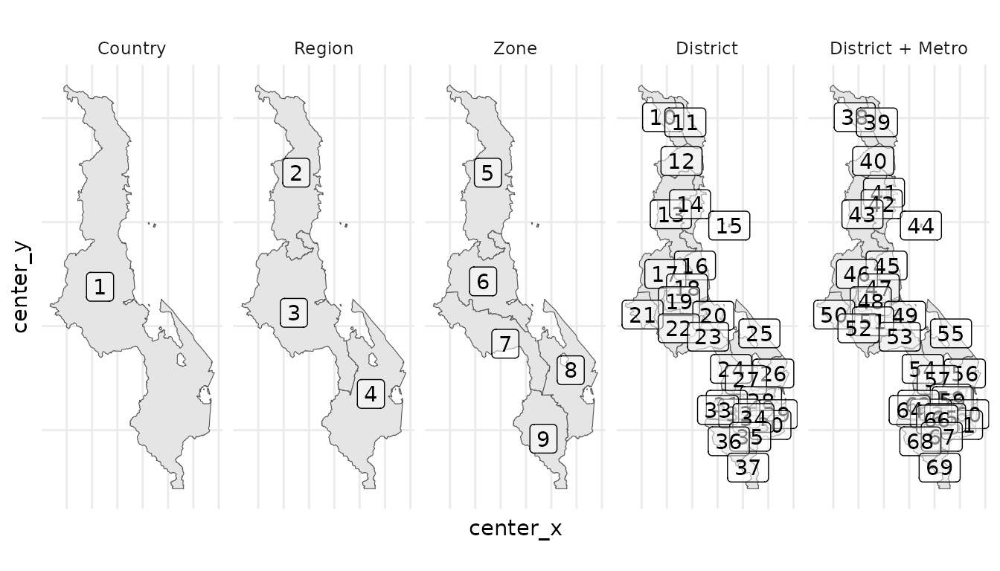

data-model.Rmdarea_levels contains metadata describing the levels in
the area hierarchy for the country.area_hierarchy contains the nested hierarchy of area
IDs at each level described in area_levels.area_boundaries defines the spatial boundaries for each
area in area_hierarchy.The fields center_x and center_y define in
area_hierarchy defines longitude/latitude coordinates
within the area. This field is currently optional. The R package will
construct these centers from the boundaries if they are not provided.
They might wish to be provided for two reasons:
From a conceptual perspective, area_hierarchy and
area_boundaries each have one record per
area_id and it would make sense for them to be in a single
table schema. They are separate schemas for convenience so that
area_hierarchy can be saved as human-readable CSV file
while area_boundaries is saved as .geojson
format by default.
The figures below show example code for generating a typical plot from the Areas schemas:
area_hierarchy %>%
left_join(area_levels %>% select(area_level, area_level_label)) %>%
mutate(area_level_label = area_level_label %>% fct_reorder(area_level)) %>%
ggplot() +
geom_sf(data = . %>% left_join(area_boundaries) %>% st_as_sf()) +
geom_label(aes(center_x, center_y, label = area_sort_order), alpha = 0.5) +
facet_wrap(~area_level_label, nrow = 1) +
naomi:::th_map()
#> Joining with `by = join_by(area_level)`
#> Joining with `by = join_by(area_id)`
age_group_meta contains metadata definining a
standardised set of age groups. This is containted in
naomi::get_age_groups().population_agesex contains population estimates by
area, sex, and five-year age group. Estimates are required at the
highest level of the area hierarchy for all age groups from 0-4 through
80+.fertility contains age-specific fertility rate (ASFR)
estimates by area.Time is identified as quarter_id defined as the number
of calendar quarters since the year 1900 (inspired by DHS Century Month
Code [CMC]):
The function interpolate_population_agesex() interpolates
population estimates to specified quarter_ids.
naomi::get_age_groups()
#> age_group age_group_label age_group_start age_group_span
#> 1 Y000_004 0-4 0 5
#> 2 Y005_009 5-9 5 5
#> 3 Y010_014 10-14 10 5
#> 4 Y015_019 15-19 15 5
#> 5 Y020_024 20-24 20 5
#> 6 Y025_029 25-29 25 5
#> 7 Y030_034 30-34 30 5
#> 8 Y035_039 35-39 35 5
#> 9 Y040_044 40-44 40 5
#> 10 Y045_049 45-49 45 5
#> 11 Y050_054 50-54 50 5
#> 12 Y055_059 55-59 55 5
#> 13 Y060_064 60-64 60 5
#> 14 Y065_069 65-69 65 5
#> 15 Y070_074 70-74 70 5
#> 16 Y075_079 75-79 75 5
#> 17 Y080_999 80+ 80 Inf
#> 18 Y015_049 15-49 15 35
#> 19 Y015_064 15-64 15 50
#> 20 Y015_999 15+ 15 Inf
#> 21 Y050_999 50+ 50 Inf
#> 22 Y000_999 all ages 0 Inf
#> 23 Y000_064 0-64 0 65
#> 24 Y000_014 0-14 0 15
#> 25 Y015_024 15-24 15 10
#> 26 Y025_034 25-34 25 10
#> 27 Y035_049 35-49 35 15
#> 28 Y050_064 50-64 50 15
#> 29 Y065_999 65+ 65 Inf
#> 30 Y000_000 <1 0 1
#> 31 Y001_004 1-4 1 4
#> 32 Y010_019 10-19 10 10
#> 33 Y025_049 25-49 25 25
#> age_group_sort_order
#> 1 15
#> 2 16
#> 3 17
#> 4 18
#> 5 19
#> 6 20
#> 7 21
#> 8 22
#> 9 23
#> 10 24
#> 11 25
#> 12 26
#> 13 27
#> 14 28
#> 15 29
#> 16 30
#> 17 31
#> 18 1
#> 19 2
#> 20 3
#> 21 4
#> 22 5
#> 23 6
#> 24 7
#> 25 8
#> 26 9
#> 27 10
#> 28 11
#> 29 12
#> 30 32
#> 31 33
#> 32 13
#> 33 14survey_meta contains meta data about each household
survey.survey_hiv_indicators is analytical table with
area-level indicators. This is the table used as inputs to Naomi.
Indicators are calculated for all stratifications of area/age/sex.
Typically the most granular stratification would be selected for model
input.The remaining tables are harmonized survey microdatasets used for calculating the indicators dataset.
The table survey_hiv_indicators should also contain all
survey HIV prevalence inputs required for Spectrum and EPP. It should be
further extended to also calculate other indicators required by
Spectrum, e.g. HIV testing outcomes for shiny90, proportion ever had
sex, breastfeeding duration, and fertlity by HIV status.
art_number reports the number currently receiving ART
at the end of each quarter by area.anc_testing reports antenatal clinic (ANC) attendees
and outcomes during the quarter.The model is currently specified to accept ART numbers by age 0-14
(age_group = Y000_014, 0-14, 0, 15, 7) and age 15+
(age_group = Y015_999) either both sexes together
(sex = "both") or by sex
(sex = "female"/sex = "male"). Possible
extension may allow ART inputs by finer stratification.
For art_number it is important to distinguish between
zero persons receiving ART (e.g. no ART available in the area) versus
missing data about the number on ART in an area. Current specification
requires a value art_current = 0 for an area with no ART
whereas no entry for a given area will be interpreted as missing data.
This could be revised, for example to require explicit input for all
areas with a code for missing data.
The anc_testing data is currently input for all ages of
pregnant women aggregated, that is age_group = Y015_049 for
age 15-49.